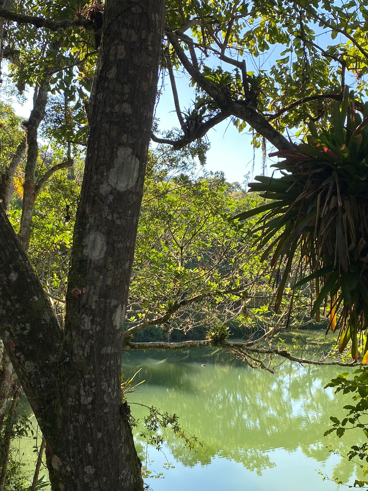
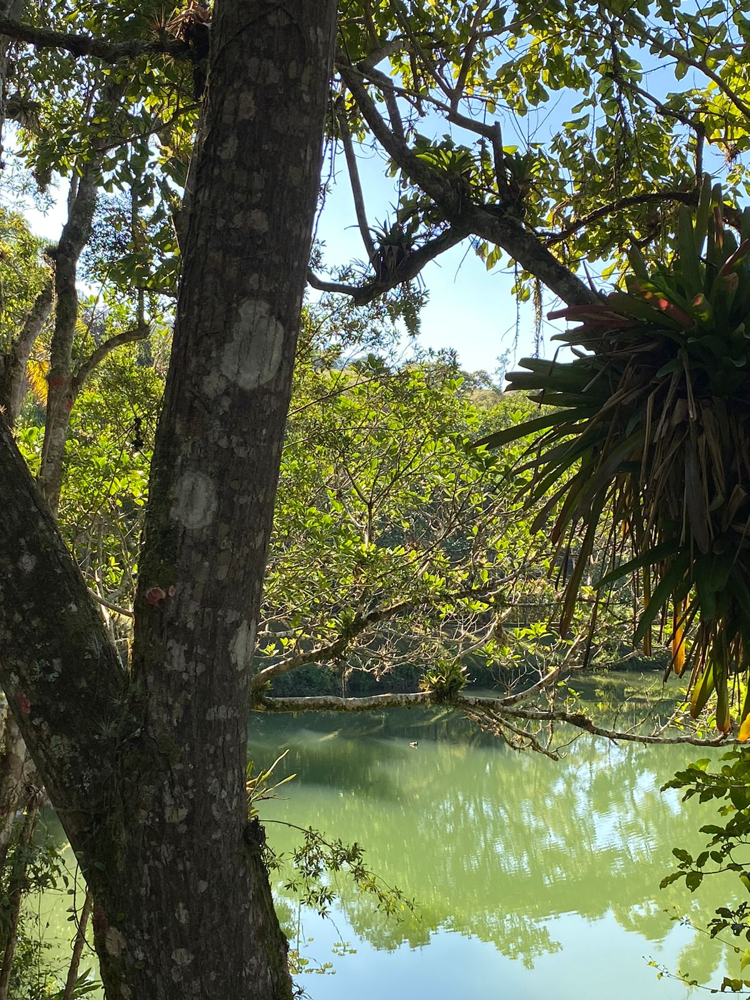
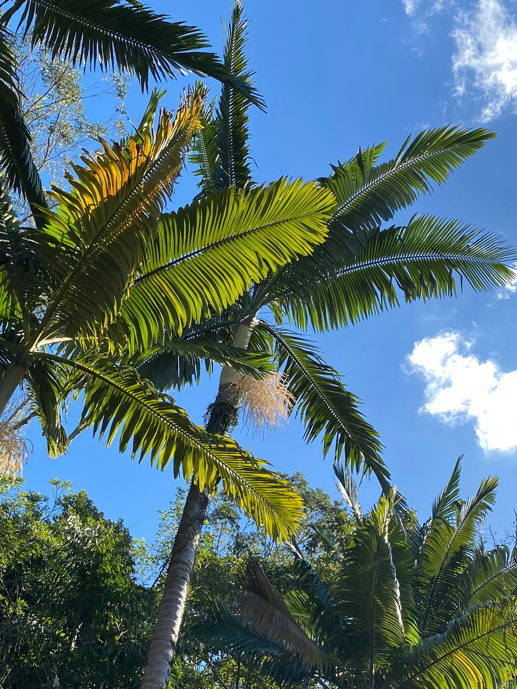
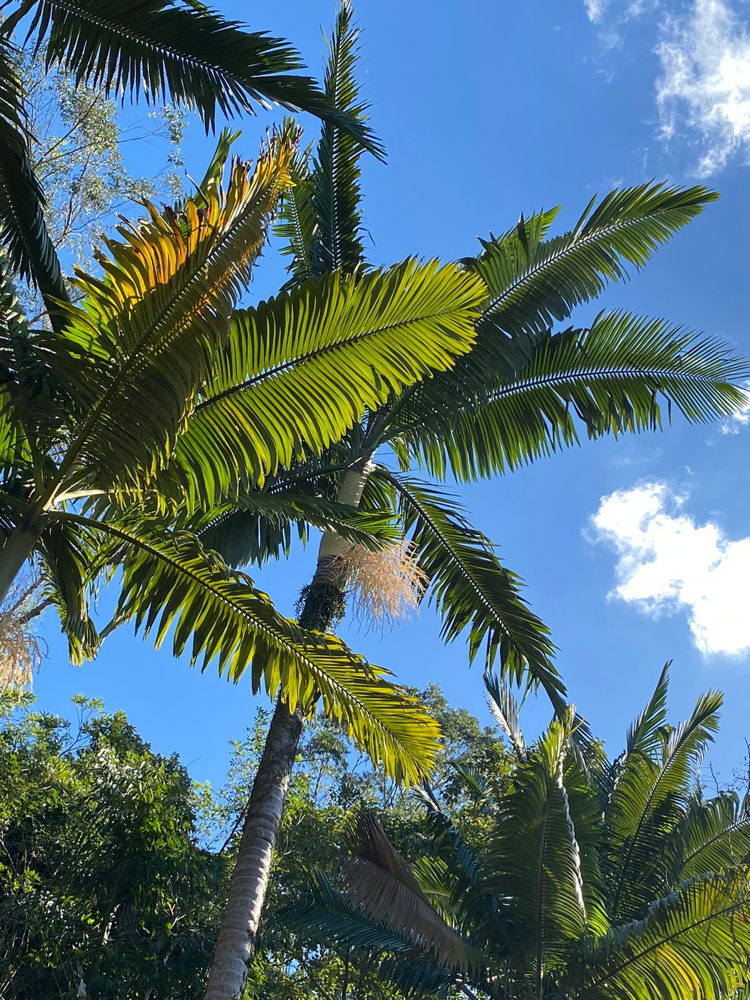

Sinopse
E se tudo o que você sempre pensou saber a respeito das árvores estivesse errado? E se, apesar de tão diferentes de nós, descobríssemos que elas compartilham diversas características dos humanos?
Nos últimos anos a ciência tem comprovado que as árvores e o homem têm muito mais em comum do que poderíamos imaginar. Assim como nós, elas se comunicam, mantêm relacionamentos, formam famílias, cuidam dos doentes e dos filhos, têm memória, defendem-se de agressores e competem ferozmente com outras espécies – às vezes, até com outras árvores da mesma espécie. Algumas são naturalmente solitárias, enquanto outras só conseguem viver plenamente se fizerem parte de uma comunidade. E, assim como nós, cada uma se adapta melhor a determinado ambiente.
Em A vida secreta das árvores, o engenheiro florestal alemão Peter Wohlleben alia seus 20 anos de experiência às últimas descobertas científicas para examinar o dia a dia desses seres fantásticos. Com um ponto de vista surpreendente e inovador, o livro se tornou um fenômeno na Alemanha, entrou para a lista de mais vendidos do The New York Times e teve seus direitos negociados para 18 países. Essa viagem fascinante pela vida das árvores e florestas é um convite a repensarmos nossa relação com a natureza.
 

AMIZADES
Há alguns anos, durante uma descoberta intrigante de pedras cobertas de musgo, o autor revela uma surpreendente rede de apoio entre árvores na floresta. Através de suas raízes, as árvores colaboram e compartilham nutrientes, formando uma comunidade interligada que transcende a individualidade.
Explorando a longevidade de troncos de árvores aparentemente mortos, o autor destaca como a cooperação entre as árvores é essencial para a sobrevivência da floresta como um todo. Ele argumenta que essa interconexão é crucial para enfrentar desafios como tempestades e secas, revelando uma forma de organização social entre as árvores.
A LINGUAGEM DAS ÁRVORES
Este capítulo explora a ideia fascinante de que as árvores têm uma forma única de se comunicar. Além dos sons produzidos pelo vento nos galhos, as árvores emitem odores que desempenham um papel crucial na sua interação com o ambiente. A descoberta de que as árvores podem enviar sinais químicos e elétricos, inclusive alertas sobre pragas, destaca a complexidade da sua linguagem.
Além disso, o autor discute como as árvores respondem a ameaças, como a presença de lagartas, através de uma comunicação elétrica e química eficiente. Essa comunicação estende-se até mesmo pelas raízes, formando uma rede subterrânea que permite a troca de informações entre as árvores. O capítulo conclui explorando a possibilidade de as árvores detectarem e emitirem ondas sonoras, revelando uma faceta ainda mais surpreendente da sua capacidade de expressão.
Serviço Social
O capítulo 3 aborda a competição entre árvores e como isso afeta seu crescimento. Em florestas comerciais, as árvores são espaçadas para incentivar o crescimento rápido, mas árvores da mesma espécie, como as faias, estabelecem conexões e compartilham recursos. A pesquisa mostra que florestas de faias próximas são mais produtivas devido à otimização da divisão de nutrientes. Intervenções humanas na competição podem resultar em árvores isoladas e menos produtivas, afetando a saúde da floresta como um todo.
Reprodução
O capítulo sobre reprodução destaca o planejamento cuidadoso das árvores, que se preparam para se reproduzir com pelo menos um ano de antecedência. Diferentes espécies têm estratégias distintas, algumas florescem anualmente enquanto outras esperam mais de um ano. A diversidade genética é crucial para evitar a reprodução consanguínea. A cerejeira, por exemplo, bloqueia a fertilização consanguínea, mostrando uma notável capacidade de distinguir seu próprio material genético. O capítulo explora também a complexidade da reprodução e a detecção de riscos pela árvore.
A loteria das árvores
O capítulo aborda o equilíbrio interno das árvores, que gerenciam cuidadosamente sua energia para crescimento, defesa e reprodução. Durante o período de germinação, cada espécie tem uma estratégia única. A tramazeira, por exemplo, espera até cinco anos para germinar, otimizando as chances de sobrevivência. O texto destaca as dificuldades enfrentadas pelas árvores, como ataques de insetos durante o florescimento, e a "loteria" da reprodução, onde apenas algumas sementes se tornam árvores adultas. Estatisticamente, as árvores têm uma probabilidade semelhante à de ganhar na loteria para alcançar a maturidade.
Devagar e sempre
Examinando faias jovens, observei um galho de 20cm com 25 pontos de engrossamento, indicando uma árvore de pelo menos 80 anos. Árvores jovens desejam crescer rápido, mas mães limitam luz, promovendo crescimento lento essencial para longevidade. Tempestades de verão abrem dossel, permitindo luz e crescimento acelerado.
Educação das mães limita luz para promover crescimento lento. Pesquisas mostram que crescimento lento é crucial para longevidade. Em certos momentos, mães caem, permitindo que mudas sobrevivam e cresçam rapidamente sob luz intensa.
Etiqueta da floresta
Árvores preocupam-se com estabilidade das grandes copas, enfrentando desafios como ventanias e nevascas. Árvores estáveis atenuam impactos uniformemente, enquanto troncos curvados ou bifurcados enfrentam dificuldades. Em locais com invernos rigorosos, a neve pode curvar árvores, moldando sua forma ao longo do tempo.
Fungos e árvores formam parcerias para trocar nutrientes, criando uma rede de colaboração na floresta. Diferentes espécies de árvores e fungos trabalham juntas para manter o equilíbrio, garantindo a sobrevivência mútua.
Escola das árvores
Árvores enfrentam desafios com sede e fome. Elas desenvolveram mecanismos para captar, armazenar e utilizar água eficientemente. A água desempenha um papel crucial em sua vida, sendo um recurso precioso em certos momentos e lugares.
A busca por luz e espaço na floresta impulsiona o crescimento e a sobrevivência das árvores. Estratégias como parcerias com fungos e adaptações ao ambiente contribuem para o sucesso no ecossistema florestal.
União
Árvores são sociáveis e colaborativas, buscando espaço e competindo pela água. Parcerias com fungos formam redes de troca de nutrientes na floresta. Essa colaboração é essencial para a sobrevivência e crescimento das árvores.
A interconexão entre árvores e fungos cria uma "internet da floresta", onde a comunicação subterrânea e a troca de nutrientes promovem a saúde e o equilíbrio do ecossistema.
O mistério do transporte de água
O transporte de água nas árvores envolve capilaridade, transpiração e osmose. A capilaridade permite que a água suba nos tubos finos, enquanto a transpiração cria uma sucção que puxa a água para cima. A osmose também desempenha um papel importante. Apesar dos avanços, ainda existem mistérios, como um chiado causado por bolhas de CO2 nas árvores.
Sinais da Idade
A pele das árvores, semelhante à pele humana, revela sinais de idade, como rugas e crescimento de musgo. Alterações físicas, como galhos curvados e crescimento mais lento, indicam o envelhecimento das árvores.
O carvalho: um bobo?
Carvalhos enfrentam desafios quando competem com faias. O crescimento lento das faias à sombra pode levar à morte dos carvalhos por inanição. No entanto, em espaços abertos, os carvalhos são bem-sucedidos e mostram resistência a condições adversas.
Especialistas
As árvores enfrentam desafios ao crescer em ambientes extremos. A localização ideal inclui solo rico, úmido e moderadamente exposto ao sol. O papel das raízes na inteligência das árvores é debatido, mas estudos sugerem que elas podem processar informações.
É árvore mesmo?
A definição de árvore é questionada quando se consideram árvores-anãs e novos troncos crescendo de tocos. A resistência e adaptação das árvores, especialmente abetos, desafiam conceitos científicos antigos.
No Reino da Escuridão
O subsolo, lar de uma variedade impressionante de seres vivos, desempenha um papel crucial para o crescimento das florestas. Animais subterrâneos são fundamentais para a saúde do solo, evitando a erosão. A regeneração florestal requer áreas protegidas e antigas florestas intactas.
Aspirador CO2
As árvores atuam como verdadeiros aspiradores de CO2, absorvendo carbono durante a fotossíntese e armazenando-o em diferentes formas ao longo de suas vidas. Quando as árvores morrem, parte desse carbono permanece no ecossistema, contribuindo para o equilíbrio climático.
O aumento da concentração de CO2 na atmosfera tem impulsionado o crescimento das árvores, mas esse crescimento acelerado não é saudável, pois é alimentado pelo nitrogênio da agricultura. A importância de preservar florestas antigas é destacada, pois árvores mais velhas crescem mais rápido e desempenham um papel crucial na luta contra as mudanças climáticas.
Ar-Condicionado de madeira
As árvores influenciam as condições climáticas locais, agindo como um "ar-condicionado de madeira". Experiências mostram que florestas podem regular a umidade e temperatura, criando um ambiente mais propício para o crescimento de diferentes espécies. A transformação de uma floresta seca em um ecossistema mais úmido devido ao plantio de faias é citada como exemplo.
Além disso, as árvores desempenham um papel fundamental no ciclo da água, agindo como uma "bomba d'água" que transporta umidade do solo para a atmosfera. A redução da umidade na Floresta Amazônica é mencionada como uma preocupação, destacando a importância de manter ecossistemas florestais saudáveis.
Bomba d’água
Explorando como a água chega ao solo, destaca-se o papel das florestas na manutenção do equilíbrio hídrico. A "bomba d’água" formada pela evaporação das árvores contribui para a precipitação em regiões distantes da costa. A importância da cooperação entre diferentes ecossistemas, como riachos, lagos e florestas, é enfatizada para manter a estabilidade.
O impacto das atividades humanas, como o desmatamento, na diminuição da umidade na Floresta Amazônica é discutido. Também é mencionado o papel do castor na regulação do equilíbrio hídrico, apesar dos desafios que apresenta para certas espécies de árvores.
Meu ou seu?
Contrariando a visão romântica de equilíbrio perfeito na natureza, o capítulo destaca a competição feroz na floresta, onde cada espécie busca sua sobrevivência às custas das outras. Diversos exemplos, como pássaros perfuradores de tronco, pulgões, besouros e grandes herbívoros, ilustram a luta pela sobrevivência e a interdependência complexa entre as espécies.
Além do aspecto alimentar, são abordadas outras interações, como o uso das árvores por cervos para se livrarem da pele dos chifres e os desafios enfrentados pelas árvores diante de diversos predadores, como fungos nocivos e herbívoros.
Lar, doce lar
Assim como nós, os pica-paus também buscam construir ninhos duradouros e estáveis. Eles realizam essa tarefa em fases, descansando entre elas. Após a primeira fase, eles tiram férias, deixando espaço para que fungos ocupem a abertura e facilitem a segunda fase da construção. Enquanto o pica-pau-preto, do tamanho de um corvo, precisa de várias tocas para diferentes fins, a renovação anual das tocas é necessária devido à ação contínua dos fungos na madeira.
Neste processo, surgem tocas que não são mais habitadas pelos pica-paus, tornando-se disponíveis para outras espécies, como a trepadeira-azul. Essa ave menor, sem capacidade de construir suas próprias tocas, utiliza as antigas tocas de pica-pau-malhado-grande para nidificar. No entanto, ela precisa adaptar a entrada das tocas para proteger seus ovos de possíveis predadores. As árvores, por sua vez, oferecem um serviço involuntário aos seus moradores ao conduzirem o som, alertando para a presença de predadores.
Nave-mãe da biodiversidade
A maioria dos animais que dependem das árvores não causa danos a elas. Esses animais adaptam troncos e copas, transformando-os em nichos ecológicos. Nas copas, até mesmo micro-hábitats úmidos podem se formar, proporcionando um ambiente propício para diversas formas de vida, como larvas de mosquitos que servem de alimento para algumas espécies de besouros.
Embora algumas árvores possam eventualmente apodrecer e oferecer abrigo a diversas espécies, todas desempenham um papel vital na cadeia alimentar. Mesmo de cabeça para baixo, as árvores continuam a ser essenciais. Galhos quebrados e folhas mortas servem de abrigo para diferentes organismos, contribuindo para a reprodução de lagartas e sapos. A madeira apodrecida, conhecida como "pau podre", torna-se um parque biológico, sustentando uma variedade de micro-organismos que, por sua vez, alimentam outras formas de vida.
Nossas árvores são verdadeiras atrações para os "escavadores de tocas", que utilizam material excedente e plantas mortas para construir seus esconderijos. Escavar um buraco na madeira pode parecer trabalhoso, mas oferece vantagens, como a estabilidade do material. Esquilos, por exemplo, ocupam tocas antigas de pica-paus, encontrando abrigo durante o inverno e escapando de predadores mais facilmente quando as árvores estão despidas.
Hibernação
A hibernação, também conhecida como dormência, é um processo caracterizado pela redução das atividades metabólicas e pelo estabelecimento de um estado letárgico. Durante a hibernação, os animais parecem estar inativos, imersos em um sono profundo, com batimentos cardíacos reduzidos e temperatura corporal em torno de 5ºC. Vários animais são capazes de hibernar, incluindo ursos, tartarugas, cobras, ouriços, esquilos e outros.
No entanto, a hibernação não é exclusiva dos animais. E as plantas? Elas também hibernam? Sim, as plantas também passam por um processo semelhante de hibernação. As plantas percebem a chegada do frio e precisam armazenar energia. Com a redução da luz solar, a primeira mudança nessas plantas é a interrupção da produção de clorofila, o pigmento verde essencial no processo de fotossíntese. Com a diminuição da clorofila, as folhas das árvores adquirem tons amarelados ou avermelhados, assemelhando-se a um estado de hibernação. Algumas plantas passam por esse tipo de hibernação para acumular energia suficiente para brotar na primavera. As folhas mudam de cor e, em seguida, caem. Elas voltarão à vida no final de julho, retomando sua plena vegetação em agosto para florescer na primavera.
Noção de tempo
O desfolhamento no outono e o nascimento dos brotos na primavera são milagres naturais das florestas, dependentes da noção de tempo das árvores.
As árvores contam com células solares nas folhas para perceberem a duração do dia, adaptando-se ao aumento da temperatura como primavera e a queda como outono.
Em anos quentes, algumas árvores perdem a noção do tempo, prejudicando seus brotos e gastos energéticos, enquanto sementes variam na necessidade de sofisticada contagem para brotar.
Personalidade
Animais, como pássaros, martas e morcegos, utilizam árvores como lar, especialmente os troncos mais grossos devido ao isolamento térmico.
Pica-paus desempenham papel importante na construção de tocas, permitindo a outros animais, como a trepadeira-azul, ocuparem tocas antigas.
A árvore, mesmo em decomposição, abriga comunidades complexas, proporcionando habitat para diversas espécies, contribuindo para a biodiversidade da floresta.
Doenças
Condições ambientais, insetos, fungos, bactérias e vírus podem afetar a vida de uma árvore. A saúde depende da estabilidade do ecossistema em que está inserida.
Árvores equilibram energia entre crescimento e defesa, utilizando fitocidas para se proteger. Liberação de fitocidas contribui para ambientes menos propícios a germes.
E fez-se a luz
A luz solar é essencial para a fotossíntese das árvores. Na floresta, a competição por luz leva a estratégias diversas de crescimento e sobrevivência entre as espécies.
Diferentes plantas se adaptam para obter luz, desde florescimento precoce até o uso de parasitismo e simbiose. A adaptação varia conforme as condições específicas de luz e competição na floresta.
Crianças de rua
Árvores em ambientes urbanos, como sequoias em parques, enfrentam desafios de crescimento devido à falta de uma comunidade florestal. Solo compactado, podas e condições climáticas adversas são obstáculos.
Problemas como raízes em encanamentos e impacto do ambiente urbano contribuem para a queda prematura de muitas árvores urbanas. Diferenças na educação e cuidado entre florestas e ambientes urbanos afetam o desenvolvimento das árvores.
Esgotamento
A seção aborda como as árvores pioneiras, que crescem rapidamente, buscam colonizar novas áreas fora da floresta. Elas enfrentam desafios, como competição com herbívoros, e desenvolvem estratégias de defesa, como cascas resistentes. No entanto, seu crescimento rápido tem um preço, e após algumas décadas, essas árvores tornam-se exaustas.
Para o norte!
As árvores, incapazes de se locomover, dependem da dispersão de sementes para encontrar novos habitats. Essa migração é essencial devido às mudanças climáticas ao longo do tempo. Algumas espécies dependem do vento para espalhar suas sementes, enquanto outras formam parcerias com animais para garantir a disseminação.
Tempestade
As sementes não são apenas instruções genéticas, mas também reservatórios de energia para o crescimento da nova árvore. As árvores investem muito na produção de milhões de sementes, pois o caminho até se tornarem árvores adultas é longo e arriscado. Estruturas como asas ajudam na dispersão pelo vento, enquanto outras adaptações facilitam o transporte aquático.
Tempestade
Nesta seção, o autor aborda como uma catástrofe natural, como uma tempestade de inverno, pode alterar drasticamente um ecossistema estável. O impacto das tempestades nas árvores, especialmente nas coníferas na Europa Central, é discutido. A altura das árvores, a resistência ao vento e os efeitos da neve no inverno são destacados como fatores que influenciam a resposta das árvores a tempestades.
Imigrantes
Esta seção explora como as árvores migram e como a introdução de espécies não nativas pode afetar o ecossistema. Espécies de árvores introduzidas por expedições ao redor do mundo são mencionadas, e o autor destaca que essas árvores imigrantes só se estabelecem em ambientes favoráveis. O risco de hibridização entre espécies nativas e introduzidas também é discutido.
Ar saudável
O texto aborda a capacidade das folhas e agulhas das árvores de filtrar partículas em suspensão no ar. O autor destaca a importância dessa capacidade, mencionando que as árvores não apenas filtram o ar, mas também emitem substâncias para se comunicar e se defender. Efeitos positivos na saúde humana ao caminhar em florestas são mencionados, incluindo melhorias na pressão arterial e capacidade pulmonar.
O verde da floresta
Nesta parte, o autor explora a complexidade das árvores, especialmente em comparação com os animais. A cor verde das folhas é explicada pela presença de clorofila, e o texto destaca como as árvores são difíceis de entender devido à evolução separada de humanos e vegetais. A lentidão dos movimentos das árvores e a vida ativa que ocorre sob a casca são mencionadas.
Liberdade
A seção discute as leis de proteção florestal e a realidade das florestas em áreas povoadas. Destaca-se que não há mais espaços intocados, e as florestas originais desapareceram há séculos. A importância do manejo sustentável é mencionada, enfatizando a mistura de árvores de diferentes idades e tamanhos. O texto destaca o processo de retorno à floresta original e a transformação das áreas protegidas.
Mais do que uma commodity
Nesta última seção, o autor reflete sobre a relação entre humanos, animais e árvores. Discute-se o avanço positivo em atribuir emoções e direitos aos animais, contrastando isso com a falta de consideração semelhante para as árvores. A seção conclui ressaltando a importância de consumir apenas o necessário do ecossistema da floresta e enfatizando a esperança de preservar as florestas para as gerações futuras.
 
